CL — Chile
The main impact of a -25% United Kingdom housing shock on Chile would be no material drop in GDP of 0.01% by Q10. Equities peak at +0.03% in Q20. This has almost no impact on Chile.
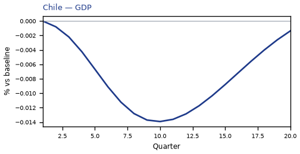
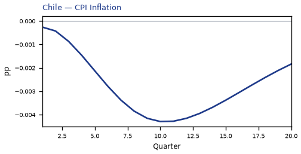
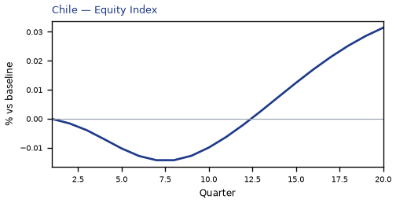
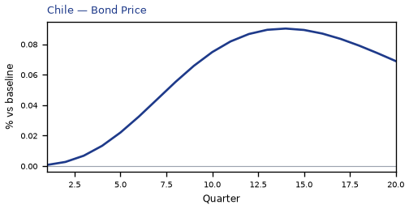
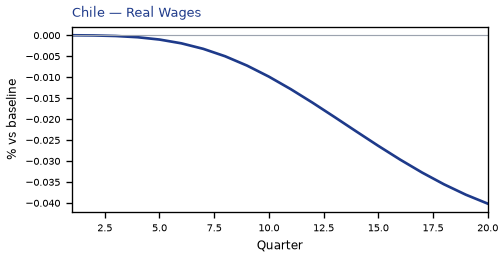
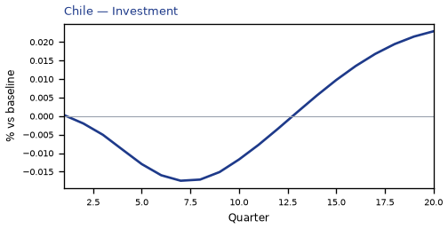

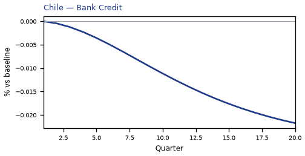
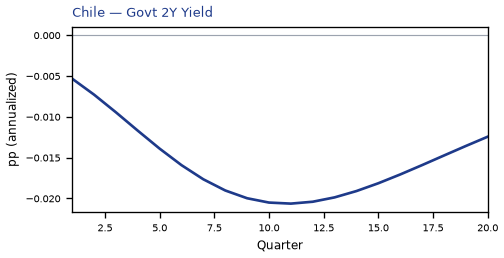
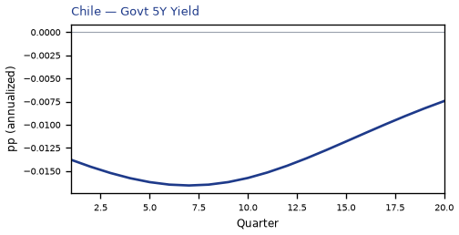
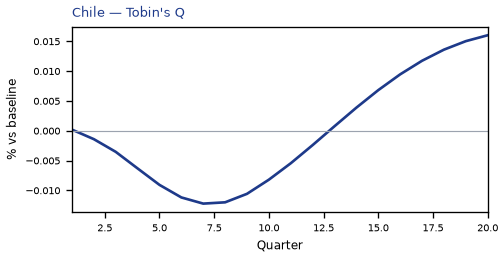
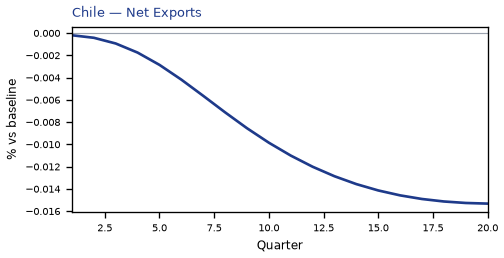
source=live · global_macro_v5 · contract v6 · Q1–Q20 JSON · not financial advice